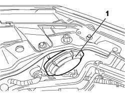
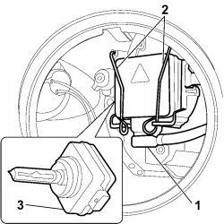

5540B44 DIPPED BEAM FOR ONE GAS DISCHARGE LIGHTING UNIT ONE LH OR RH R R
- Path
- Procedures > 55 ELECTRICAL EQUIPMENT > 5540 EXTERIOR LIGHTING > 5540B HEADLAMPS > 5540B44 DIPPED BEAM FOR ONE GAS DISCHARGE LIGHTING UNIT ONE LH OR RH R R
- Kind
- repair procedure (removal / refitting; the operation number is the code)
- Applies to
- all engines; all production periods
- Interactive page
- https://sloeber94.github.io/elrnDB-fCrm/en/#/194000740
Applies to: all engines; all production periods
 Removing
Removing
 Refitting
RefittingOp. 7040D30 ENGINE BAY FRONT BEAM COVER - R R
Right side:
Op. 1048A10 AIR FILTER ASSEMBLY - R.R.
Proceed as follows for both lamps:
1. Undo the protective cover and remove it.

Applies to: all engines; all production periods
1. Disconnect the connector.
2. Release the retaining springs.
3. Extract the bulb.
Description | Connector | |
|---|---|---|
1 | LEFT HEADLAMP |
Description | Connector | |
|---|---|---|
1 | RIGHT HEADLAMP |

Applies to: all engines; all production periods
Refitting
Removing- Position the bulb and attach the retaining clips.
- Connect the electrical connection.
Description | Connector | |
|---|---|---|
LEFT HEADLAMP |
Description | Connector | |
|---|---|---|
RIGHT HEADLAMP |
- Place the cover in position and tighten it to close.
If the operation has been carried out on the right side of the vehicle:
Op. 1048A10 AIR FILTER ASSEMBLY - R.R.
Proceed as follows for both sides:
Topics linked from this page (4)
- 1048A10 AIR FILTER ASSEMBLY - R.R.
- 7040D30 ENGINE BAY FRONT BEAM COVER - R R
- F010 LEFT HEADLAMP
- F011 RIGHT HEADLAMP